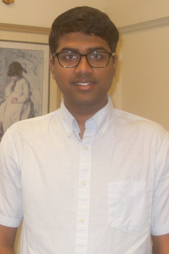

Pratyush Potu
Department of Applied Mathematics, Brown University
Email: pratyush_potu [at] brown [dot] edu
I am a fourth year graduate student at Brown University, advised
by Johnny Guzmán.
I work on numerical methods for partial differential equations.
Here is my CV (updated Jan 2026) and Google Scholar.
Publications and preprints
- A. Ern, J. Guzmán, PP and M. Vohralík,
Discrete Poincaré inequalities: a review on proofs, equivalent formulations, and behavior of constants,
IMA J. Numer. Anal., to appear (2026)
[hal]
[arXiv]
[doi]
- A. Ern, J. Guzmán, PP and M. Vohralík,
Local L2-bounded commuting projections using discrete local problems on Alfeld splits
Found. Comput. Math., to appear (2026)
[hal]
[arXiv]
- J. Guzmán and PP,
A Framework for Analysis of DEC Approximations to Hodge-Laplacian Problems using Generalized Whitney Forms
[arXiv]
Talks
-
Finite Element Circus, George Mason University, Arlington, VA, Oct 2025
-
IMSI Workshop on Discrete Exterior Calculus (Poster), Chicago, IL, Sep. 2025
-
SIAM Conference on Computational Science and Engineering (CSE25), Fort Worth, TX, Mar. 2025
-
AMS Spring Eastern Sectional Meeting, Hartford, CT, Apr. 2025
-
Finite Element Circus, Oakland University, Rochester, MI, Apr. 2025
Teaching
Brown University
-
APMA 1650 - Statistical Inference 1, Fall 2023
-
APMA 0360 - Applied Partial Differential Equations, Spring 2024
Brown University Directed Reading Program
-
Calculus of Variations, Fall, Spring 2024
-
Numerical Linear Algebra, Fall 2024
-
Spectral Graph Theory, Spring 2025
-
Spline Theory, Fall 2025
-
Numerical Methods for Differential Equations, Fall 2025